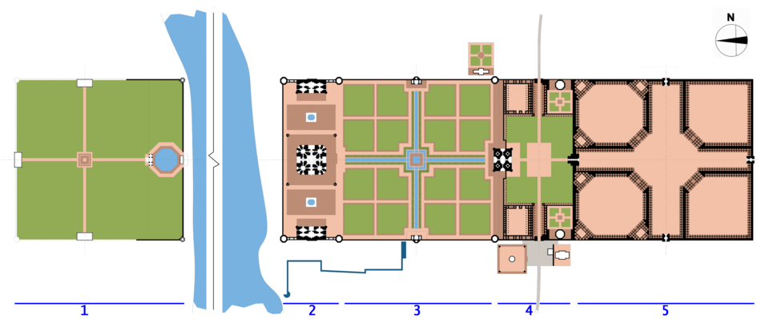

De sa construction à nos jours, il a tenu malgré les tumultes...
Le cœur du monument
Le mausolée du Taj Mahal se présente comme une œuvre d'architecture moghole, réalisée en marbre blanc.
Le bâtiment abrite, au centre, les cénotaphes de Mumtaz Mahal et de Shah Jahan. La qualité des matériaux, notamment la pierre travaillée par la technique de pietra dura, reflète l'excellence artisanale de l'époque.
Les espaces de contemplation
Les espaces intérieurs et extérieurs ont été pensés pour offrir des ambiances variées.
À l'intérieur, l'utilisation maîtrisée du marbre et des incrustations permet de créer des zones de lumière et d'ombre qui révèlent les cénotaphes. Les abords bénéficient d'une organisation typique renforcée par la présence des minarets.
Plan du Taj-Mahal

L'organisation spatiale
L'ensemble du site est conçu selon des principes de symétrie typiques de l'Empire moghol.
Le plan du monument intègre les différents éléments — minarets, dômes et espaces de circulation — afin de guider naturellement la visite. Le résultat est une distribution harmonieuse qui permet aux visiteurs de comprendre la structure tout en découvrant les subtilités.
Une harmonisation des matériaux
Chaque matière utilisée participe à l'unicité du Taj Mahal. Le marbre, choisi pour sa pureté, se marie parfaitement avec les pierres.
L'emploi du grès rouge et de pierres semi-précieuses (pietra dura) crée un contraste saisissant. Les travaux de restauration témoignent du souci de conserver l'authenticité et la durabilité des matériaux d'origine.